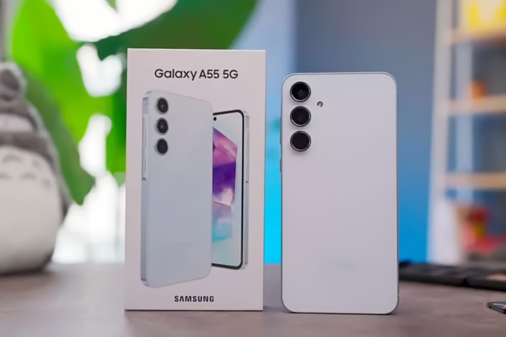

Review Lengkap Samsung Galaxy A55 5G: Flagship Killer dengan Harga Terjangkau?
Spesifikasi Utama

- Chipset: Exynos 1480
- RAM: 8GB
- Penyimpanan: 128GB/256GB
- Layar: 6.6" FHD+ Super AMOLED 120Hz
- Kamera: Triple 50MP + 12MP + 5MP
- Baterai: 5000mAh
Kelebihan Samsung Galaxy A55 5G
1. Performa Tangguh
Ditenagai Exynos 1480 dengan neural processing unit yang lebih cepat 25% dari generasi sebelumnya.
2. Desain Premium
- Bingkai aluminium pertama di seri A
- Proteksi Gorilla Glass Victus+
- Rating IP67 tahan air dan debu
3. Kamera Mumpuni
Dukungan Nightography untuk foto low-light yang lebih baik dan stabilisasi optik (OIS) pada kamera utama.
"Galaxy A55 5G memberikan pengalaman flagship dengan harga mid-range, terutama dalam hal build quality dan kamera." - FirKaizen
Kekurangan Samsung Galaxy A55 5G
1. Pengisian Daya Masih Lambat
Hanya mendukung 25W fast charging (kompetitor sudah menawarkan 65W+).
2. Tidak Ada Charger dalam Kotak
Anda harus membeli charger terpisah untuk memanfaatkan fast charging.
3. Harga Lebih Tinggi dari Pendahulu
Kenaikan harga sekitar 15% dari A54 dengan peningkatan yang tidak terlalu signifikan.
Perbandingan dengan Kompetitor
- vs Xiaomi 13T: Lebih unggul di kamera tapi kalah performa
- vs Pixel 7a: Baterai lebih besar tapi software experience kalah
- vs Galaxy S23 FE: Harga lebih murah tapi chipset lebih lemah
Verdict
Galaxy A55 5G cocok untuk Kamu yang:
- Menginginkan build quality premium
- Butuh update software jangka panjang (4 major OS updates)
- Fokus pada kualitas kamera all-round
Temukan review lebih mendalam dengan benchmark lengkap di FirKaizen.com
Disclaimer: Review berdasarkan pengalaman penggunaan 2 minggu. Harga bervariasi tergantung region dan promo.